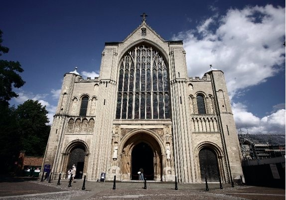
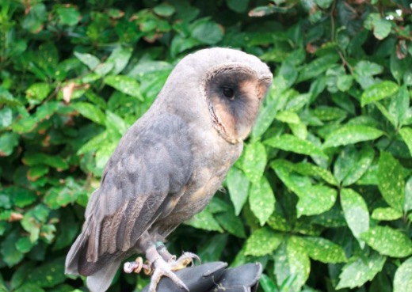
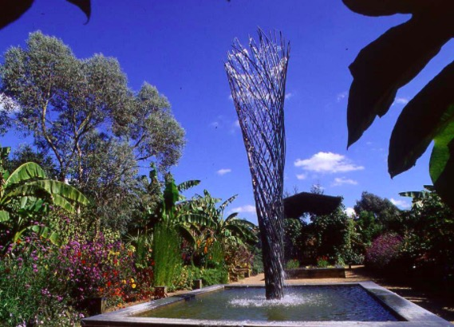
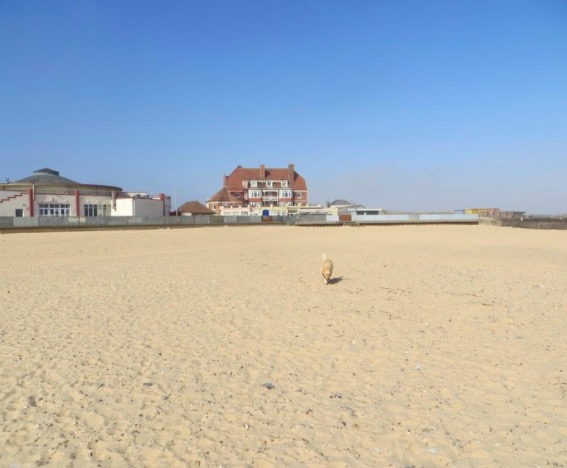
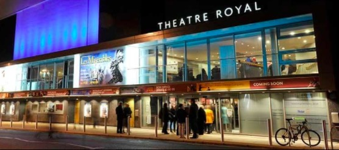

Norwich Cathedral

“Norfolk’s favourite building”, Founded in 1096 and built using Normandy stone shipped from Caen, Norwich Cathedral is set in the 44 acre Cathedral Close, a peaceful city centre sanctuary.The Cathedral itself is one of the finest complete Romanesque buildings in Europe, with the highest Norman tower and largest monastic cloisters in England.
Inside, the Cathedral tells almost 1000 years of history, with our enthusiastic volunteers on hand to talk you through the incredible stories of its past.There is more to see at Norwich Cathedral than you think.
Happisburgh Owls

A chance get up close and personal with probably some of the tamest beautiful owls that you are likely to have the privelidge to meet. Well supervised these owls can be handled by all age groups. Enjoy a close up way of understanding a little more of the everyday lives of these beautiful birds and the conservation needs to help them continue their plight for survival. Situated in beautiful north norfolk we are available for all your outside and home venues.
East Ruston Old Vicarage Garden

The garden is open from 29th March to 24th October 2015 on Wednesday, Thursday, Friday, Saturday, Sunday and Bank Holidays from 1pm to 5.30pm. The gardens at East Ruston Old Vicarage are one of the most exciting surprises in the county, who would expect to find a verdant, sheltered garden in the prairie landscape that is north east Norfolk? Enter the garden and you are worlds away from the local landscape for here there are many gardens within the whole including a new Walled Garden, Rose Garden, Woodland Garden, Mediterranean Garden and a stunning Desert inspired by the landscape of Arizona.
Gorleston Beach

Gorleston beach is the ideal way to spend a day by the seaside. It's lovely with plenty of space and not all stones. There are plenty of places for meals, ice-creams, dough noughts and all your normally goodies by the seaside. Plenty of parking either on the road by the cliff top or down by the seaside. There are public toilets close by the seaside. If you want to walk along the beach you can walk to Hopton, go threw Hopton Holiday Village and back via sandy lane, Gorleston Golf Club, follow the road to the end turn right and it will bring you back by the cliff top.Long Clean Beach fine yellow sand long and with Plenty of amenaties and stuff to fill a kids day. Off the beach there are Plenty of cafe's to keep the adult's happy To.
Norwich Theatre Royal

Central Norwich premier theatre presenting musicals, drama, dance, opera, comedy and concerts. Professional shows are brought to Norwich direct from London's West End or as part of their national and international tours. Our bars and restaurant offer a wide selection of hot and cold food, snacks and drinks. Open from 9.30am Monday to Saturday, visitors are welcome to call in for coffee and cake or a bite to eat at lunchtime. Pre-show meals are available from 5pm in both the restaurant and the Adnams Circle Bar. Norwich Theatre Royal is fully accessible and family friendly.
RAF Air Defence Radar Museum
Air defence radar operations began at RAF Neatishead in 1942 and continued until 2004 when RAF Neatishead ceased operations and became Remote Radar Head (RRH) Neatishead. RRH Neatishead supplies engineering support to the radar at Trimingham. When operations at RAF Neatishead moved into the underground bunker in 1995, the Operations Room was left intact and it eventually became the centre piece of the ADRM.